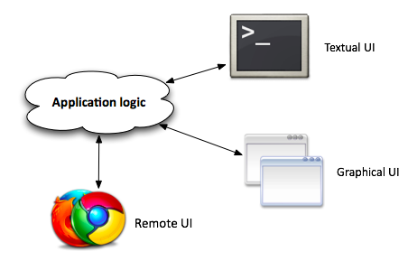
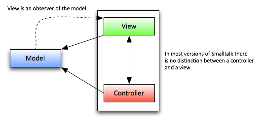

Leaning Torwards Domain-Driven Design
Awesomeness Curated by Josh Freeman / @jdfreeman11
What this presentation will do
Provide an Ultra-High-Level view of MVC/SOLID/DDD
What this presentation will not do?
Make any of us DDD experts
The Model-View-Controller Paradigm
The Birth of MVC
- Designed by Trygve Reenskaug in 1979
- Smalltalk-76
- Intended for Graphical User Interfaces
MVC as We Know It

MVC as It Was Designed c. ~1980
MVC as It Was Designed c. ~1980, 2
What is this Really About?
Object-Oriented Programming
Just because you put your code into classes doesn't mean it is object-oriented
~ Me, just now
SOLID
- Single Responsibility
- Open-Closed
- Liskov Substitution
- Interface Segregation
- Dependency Inversion
Single Responsibility
A class should have one, and only one, reason to change.
The Principles of OOD
Single Responsibility, Cont.
- You will create more classes than you might expect
- Your classes will likely be small, <5 methods is common
- Easily unit-tested
Dependency Inversion
Depend on abstractions, not on concretions.
The Principles of OOD
Dependency Inversion, Cont.
Think less about what an object does, and more about what it can do
Hard-Coded Dependency
class Greeter
{
public function sayHello()
{
echo return CurrentUser::sayHello();
}
}
Dependency Inversion
class Greeter
{
public function __construct($hello_sayer)
{
$this->hello_sayer = $hello_sayer;
}
public function sayHello()
{
echo $this->hello_sayer->sayHello();
}
}
Now our class can be used in other contexts
SOLID is About Ease of Change
- Transparent
- Reasonable
- Usable
- Exemplary
Automated Testing
Testing is paramount to any projects long-term success
The vast-majority of your tests should be automated
Using humans to run through a suite of changes is dumb and a waste of time
You should be confident that any change you make does not have unintended consequences
Removing tests is perfectly valid...
If you remove the functionality they represent
Domain-Driven Design (DDD)
What is DDD?
- Patterns and principles to map real-world business ideas to code
- A deeper application of SOLID principles
- Application-level abstraction
How does this Relate to MVC?
- Your business logic is your domain layer
- Your MVC is your application layer that asks your domain layer to make decisions
- Your MVC framework is a detail that can be deferred
Why not just use fat models/skinny controllers?
Single Responsibility Principle
Models are part of your persistence layer.
So skinny controllers?
Put your controllers on a very restrictive diet
Heresy, According to Some
A project should NOT start with any of the following:
~$ rails new my-project
~$ composer create-project laravel/laravel my-project
~$ django-admin.py startproject my-project
What makes your application special is its domain
If it's not special, buy a product and move on with your life
Design better software today than you did yesterday. Continue doing so until the day you stop writing software.
~ Me, just now
Giants with Sore Shoulders
Leaning Torwards Domain-Driven Design
Awesomeness Curated by Josh Freeman / @jdfreeman11